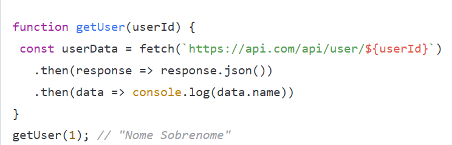
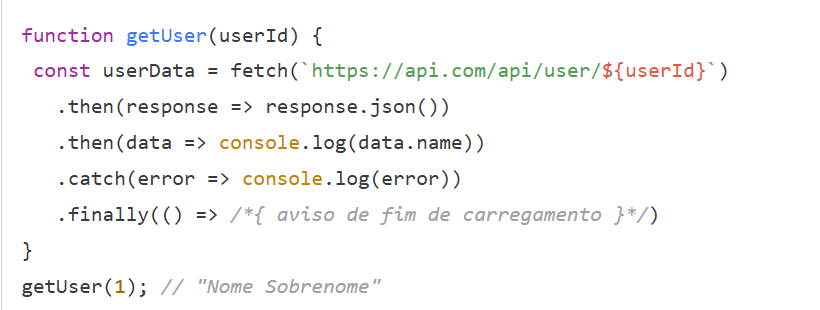
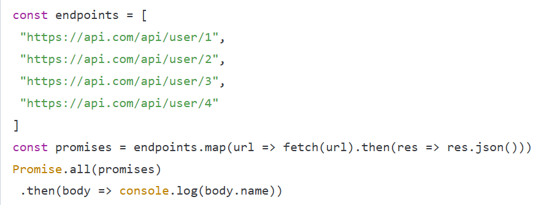

No dia-a-dia do desenvolvimento web, utilizamos muito (e cada vez mais) dados externos - por exemplo, recebidos através de um endpoint de uma API REST (um microserviço) ou resultados de algum outro processamento. Ou seja, quando isso ocorre o sistema tem que esperar os dados "chegarem" antes de utilizar esse resultado.
Costumamos chamar de programação assíncrona o ato de executar uma tarefa em "segundo plano", sem nosso controle direto disso. Sem explicitamente trabalhar com threads e coordená-las. Escrevendo basicamente da forma tradicional que temos. Porém, é importante frisar o comportamento do JavaScript de "executar uma coisa por vez". Com isso em mente o assíncrono no JavaScript vai separar seu código em duas partes: coisas que rodam agora, coisas que vão rodar depois de algo acontecer... Calma. Vai ficar mais fácil de entender.
Trabalhando com front-end, vemos que uma boa parte do que ocorre no âmbito do navegador é event-driven. Ou seja, o código aguarda algum evento acontecer (por exemplo, o usuário clicar em um botão) antes de executar qualquer código. Outros exemplos de eventos, além de clique do mouse, são toque na tela, determinada tecla ser pressionada, o cursor do mouse passar em cima de algum elemento, etc). Mas, para além destas interações do usuário com a interface, há muitas outras situações que podem ser síncronas ou assíncronas.
Para exemplificar, podemos pensar em comunicação. Uma ligação telefônica é um exemplo de comunicação síncrona: quando falamos ao telefone, as informações chegam e saem em sequência, uma após a outra; fazemos uma pergunta, recebemos logo em seguida a resposta, com os dados dessa resposta fazemos outro comentário, etc.
Por outro lado, uma conversa online via algum mensageiro, como o WhatsApp ou ou Telegram, é um exemplo de comunicação assíncrona: enviamos uma mensagem e não ficamos olhando para a tela, esperando, até a outra pessoa responder (ou pelo menos não deveríamos!). Afinal de contas, não temos como saber quando, e se, essa resposta vai chegar. Mandamos a mensagem e vamos fazer outras coisas enquanto a resposta não chega, ao contrário do telefone.
Com o código, o processo é parecido: um código síncrono é aquele de ocorre em sequência, uma instrução após a outra.
function soma(num1, num2) {
return num1 + num2;
}
console.log(soma(2, 2)) // 4
Mas o que acontece quando, por exemplo, nosso código precisa receber alguns dados de uma API? Ao mesmo tempo que é preciso aguardar a requisição e resposta da API, não podemos bloquear o funcionamento de todo o nosso programa; seria a mesma coisa que enviar uma mensagem pelo WhatsApp e ficar esperando a resposta sem fazer mais nada nesse meio tempo.
É para esse tipo de situação, que requer processamento assíncrono que existem as Promises, ou, literalmente, promessas. O sentido de Promise em JavaScript é similar ao literal: Uma pessoa te passa o contato do Telegram e pede para que você mande uma mensagem pra ela, prometendo que vai responder... O que não temos como saber se vai acontecer.
Quando enviamos uma requisição de dados a uma API, temos uma promessa de que estes dados irão chegar, mas enquanto isso não acontece, o sistema deve continuar rodando. Se, por exemplo, o servidor estiver caído, essa promessa de dados pode não se cumprir, e temos que lidar com isso. As Promises trabalham neste contexto - elas são a ferramenta que o JavaScript utiliza para lidar com código assíncrono.
Existem algumas formas de se trabalhar com processamento assíncrono (ou seja, Promises) em JavaScript: utilizando o método .then(), as palavras-chave async e await ou o objeto Promise e seus métodos. Aqui, vamos focar no uso de .then(), async/await e no uso do método Promise.all.
Já que estávamos falando sobre APIs REST, vamos ver um exemplo usando a Fetch API do JavaScript para buscar dados e convertê-los para o formato JSON. Esta API (que funciona nativamente nos navegadores atuais e acabou de ser integrada ao Node.js na versão 18) tem alguns métodos internos e já retorna por padrão uma Promise que vai resolver a requisição, tendo ou não sucesso.
Destrinchando o código acima: a função getUser() recebe um id de usuário como parâmetro, para que seja passado para o endpoint REST fictício. A função fetch() recebe como parâmetro o endpoint e retorna uma Promise.
Promises têm um método chamado .then(), que recebe uma função callback e retorna um "objeto-promessa". Não é um retorno dos dados, é a promessa do retorno destes dados.
Assim, podemos escrever o código do que irá acontecer em seguida, com os dados recebidos pela Promise, e o JavaScript vai aguardar a resolução da Promise sem pausar o fluxo do programa.
O resultado pode ou não estar pronto ainda, e não há forma de pegar o valor de uma Promise de modo síncrono; Só é possível requisitar à Promise que execute uma função quando o resultado estiver disponível - seja ele o que foi solicitado (os dados da API, por exemplo), ou uma mensagem de erro caso algo tenha dado errado com a requisição (o servidor pode estar fora do ar, por exemplo).
No exemplo acima: ao iniciarmos uma cadeia de promessas - no caso, para fazer uma requisição HTTP - enquanto a resposta está pendente ela retorna um Promise object. O objeto, por sua vez, define uma instância do método .then(). Ao invés de passar o retorno da função callback diretamente para a função inicial, ela é passada para .then(). Quando o resultado da requisição HTTP chega, o corpo da requisição é convertido para JSON e este valor convertido é passado para o próximo método .then().
A cadeia de funções fetch().then().then() não significa que há múltiplas funções callbacks sendo usadas com o mesmo objeto de resposta, e sim que cada instância de .then() retorna, por sua vez, um new Promise(). Toda a cadeia é lida de forma síncrona na primeira execução, e em seguida executada de forma assíncrona.
Não há como utilizar o try/catch quando usamos o .then(), pois a computação só será efetuada após o retorno do objeto-Promise. Então devemos passar funções que executem as alternativas, para o caso de sucesso ou falha da operação. Por exemplo:
Além do método .then() que recebe o objeto-Promise para ser resolvido, o método .catch() retorna no caso de rejeição da Promise. Além disso, o último método, .finally(), é chamado independente de sucesso ou falha da promessa e a função callback deste método é sempre executada por último. Esta função pode ser usada, por exemplo, para fechar uma conexão ou dar algum aviso de fim de carregamento.
No caso de várias promessas que devem ser resolvidas pelo programa (por exemplo, alguns dados em endpoints REST diferentes), pode-se utilizar Promise.all:
Além do método .then() que recebe o objeto-Promise para ser resolvido, o método .catch() retorna no caso de rejeição da Promise. Além disso, o último método, .finally(), é chamado independente de sucesso ou falha da promessa e a função callback deste método é sempre executada por último. Esta função pode ser usada, por exemplo, para fechar uma conexão ou dar algum aviso de fim de carregamento.
No caso de várias promessas que devem ser resolvidas pelo programa (por exemplo, alguns dados em endpoints REST diferentes), pode-se utilizar Promise.all:
No exemplo acima, um array de endpoints (endpoints) é percorrido com .map e as promessas resultantes do fetch passadas para a variável promises em um novo array. Todo este array de promessas será percorrido e resolvido por Promise.all - no exemplo acima a função callback apenas passa para console.log a propriedade fictícia name.
Uma Promise podem estar "pendente" (pending) ou "resolvida" (settled). Os estados possíveis, uma vez que
uma
Promise está settled, são "concluída" (fulfilled) ou "rejeitada" (rejected). Após passar de pending para
settled e se definir como fulfilled ou rejected, a Promise não muda mais de estado.